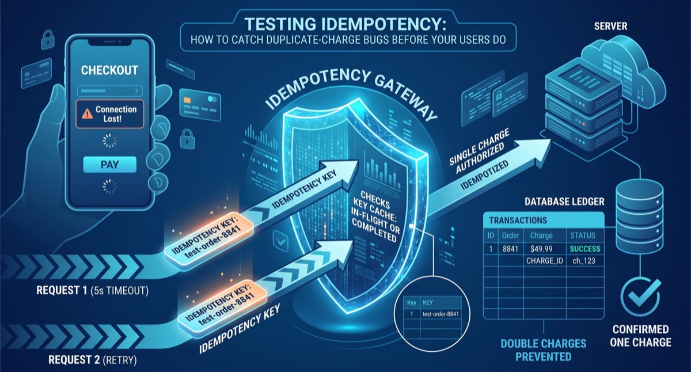

Testiranje idempotentnosti: kako uhvatiti duple naplate prije korisnika
Praktičan vodič kroz testiranje idempotency ključeva u tokovima plaćanja i checkout-a, sa konkretnim test slučajevima za hvatanje duplih naplata.
Kupcu tokom checkout-a na dvije sekunde pukne mobilna veza. Aplikacija, sasvim ispravno, ponovo šalje zahtjev za plaćanje. Negdje na serveru prvi zahtjev je zapravo prošao bez problema — izgubio se samo odgovor. Sada za jednu narudžbu postoje dvije naplate. Ovo je jedan od najčešćih načina na koje fintech i e-commerce sistemi gube povjerenje kupaca, a rijetko ga uzrokuje neispravan payment gateway. Uzrokuje ga logika ponovnih pokušaja koja nikada nije testirana protiv upravo onih kvarova zbog kojih je napravljena.

Idempotentnost je mehanizam koji treba da spriječi baš ovo, i dobar je primjer kontrole koja u dizajn dokumentu izgleda čvrsto, a raspadne se čim neko u QA-u zaista pokuša da je slomi.
Šta idempotentnost treba da garantuje
Obrazac je na papiru jednostavan: klijent generiše jedinstven idempotency ključ i šalje ga uz zahtjev koji mijenja stanje (naplata kartice, kreiranje narudžbe, povraćaj novca). Ako isti zahtjev treba ponoviti — jer je klijentu isteklo vrijeme, izgubio je vezu ili je server pao usred odgovora — šalje se ponovo sa istim ključem. Server bi trebalo da prepozna ključ, preskoči ponovnu obradu i vrati originalni rezultat, umjesto da napravi drugu naplatu ili drugu narudžbu.
Stripe-ov inženjerski tekst o ovom obrascu je dobra referenca za osnovni problem: mrežni kvar se može desiti prije nego što server primi zahtjev, dok ga obrađuje, ili nakon što ga završi, a prije nego što odgovor stigne do klijenta. Iz ugla klijenta sva tri slučaja izgledaju isto — kao istek vremena — pa je ponovni pokušaj često jedini razuman potez. Idempotency ključ je ono što serveru omogućava da razlikuje „ovo je stvarni ponovni pokušaj poziva koji sam već obradio" od „ovo je novi, zaseban zahtjev".
Zvuči kao riješen problem. U praksi timovi nedovoljno testiraju tri stvari: šta se dešava kada ponovni pokušaj stigne dok je prvi zahtjev još u obradi, šta se dešava kada se ključ ponovo iskoristi sa drugačijim podacima, i šta se dešava ako zapis ključa istekne ili bude izbačen iz keša prije nego što stigne spor ponovni pokušaj.
Konkretan scenario
Zamislite checkout servis online prodavnice. Kupac potvrdi plaćanje, mobilni klijent ima timeout od 5 sekundi, a zahtjevu u danu sa velikim opterećenjem treba 6 sekundi da se završi. Klijent automatski pokušava ponovo sa istim idempotency ključem. Ako server provjerava samo „da li ovaj ključ postoji u mom kešu završenih zahtjeva", propustiće slučaj u kojem je prvi zahtjev još u obradi, i oba zahtjeva će se utrkivati da naplate karticu. Ovo je upravo slučaj „konflikta u toku obrade" koji je lako ostaviti netestiranim, jer se pojavljuje samo pod opterećenjem ili kašnjenjem, a ne u mirnom staging okruženju gdje se svaki poziv završi za 50ms.
Koristan način da se ovo namjerno testira, umjesto da se nadate da će load testiranje slučajno naići na problem, jeste da istovremeno pošaljete dva identična zahtjeva i nakon toga provjerite kompletno stanje sistema, a ne samo HTTP odgovor:
import concurrent.futures
import requests
idem_key = "test-order-8841"
payload = {"order_id": "8841", "amount_cents": 4999}
headers = {"Idempotency-Key": idem_key}
def send():
return requests.post(
"https://api.example.com/v1/charges",
json=payload, headers=headers, timeout=10,
)
with concurrent.futures.ThreadPoolExecutor(max_workers=2) as pool:
r1, r2 = [f.result() for f in
[pool.submit(send), pool.submit(send)]]
# Oba poziva treba da vrate ISTI charge id
assert r1.json()["charge_id"] == r2.json()["charge_id"]
# I ledger treba da pokaže tačno jednu naplatu za ovu narudžbu
charges = requests.get(
f"https://api.example.com/v1/orders/8841/charges"
).json()
assert len(charges) == 1Provjera nad knjigom naplata (ledger), a ne samo nad dva HTTP odgovora, je dio koji timovi najčešće preskoče. Dva identična odgovora 200 i dalje mogu skrivati dva odvojena reda u bazi ako race condition pogodi pogrešno mjesto — API sloj može izgledati idempotentno, dok računovodstveni sloj to nije.
Pored ponovnog pokušaja na „srećnom putu", vrijedi testirati i: ponovnu upotrebu istog ključa sa drugačijim payloadom (treba da bude odbijena, a ne tiho obrađena sa novim podacima), slanje ključa sa iznosom promijenjenim za jedan cent kako bi se uhvatila slaba logika poređenja, puštanje da ključ istekne prije nego što stigne legitimno spor ponovni pokušaj, i gašenje serverskog procesa usred zahtjeva kako bi se simulirao slučaj „završeno, ali odgovor izgubljen" koji čisto testiranje timeout-a neće reprodukovati.
Gdje ovaj pristup ne dostiže
Testiranje idempotentnosti ima stvarna ograničenja. Greške istovremenosti zavise od tajminga, pa test koji jednom prođe ne dokazuje da je race condition popravljen — dokazuje samo da taj put niste pogodili prozor. Višestruko pokretanje testa sa istovremenim zahtjevima, ili pod vještačkim opterećenjem, uhvati više od jednog pokretanja, ali je i dalje stvar vjerovatnoće, a ne dokaz.
Ni ovo nije univerzalno rješenje. Idempotency ključevi štite od ponovnih pokušaja iste logičke operacije; ne štite od korisnika koji dvaput klikne „plati" i tako generiše dva različita ključa za ono što je, za njega, jedna radnja — to mora da se riješi na UI sloju (onemogućavanje dugmeta, debouncing) kao i na API sloju. A idempotency sloj izgrađen na kešu sa kratkim TTL-om može tiho da prestane da radi onog trenutka kada ponovni pokušaj stigne sporije nego što se očekivalo, što je incident u produkciji koji nimalo ne liči na funkcionalnu grešku — liči na povremenu, rijetku duplu naplatu koju je teško reprodukovati na zahtjev.
Na kraju, ovakvo testiranje ima stvaran trošak. Test okruženja za istovremene zahtjeve i simulacije gašenja procesa traže više pripreme od običnog testa zahtjev/odgovor, i primamljivo ih je preskočiti pod pritiskom rokova. Za sve što dira novac to je obično pogrešan kompromis.
Šta dalje
Počnite tako što ćete popisati svaki endpoint u sistemu koji mijenja stanje, a tiče se novca, zaliha ili stanja naloga, i provjerite koji od njih uopšte podržavaju idempotency ključeve — mnogi timovi tu odmah nađu rupe. Za one koji ih podržavaju, napišite test sa istovremenim duplim zahtjevima poput gornjeg i provjerite ledger nizvodno, a ne samo statusni kod. Dodajte test za ponovnu upotrebu ključa sa izmijenjenim payloadom, jer je tiho prepisivanje česta i opasna greška. Na kraju, stavite bar jedan od ovih testova trajno u regresioni skup — zaštite idempotentnosti su upravo ona vrsta stvari koju rutinski refaktoring, izmjena keša ili novi message queue mogu tiho da pokvare mjesecima kasnije.
Povezane API provjere i testiranje pouzdanosti: Testiranje race condition-a kod ponovljenog plaćanja, API contract testiranje i Testiranje BOLA propusta.